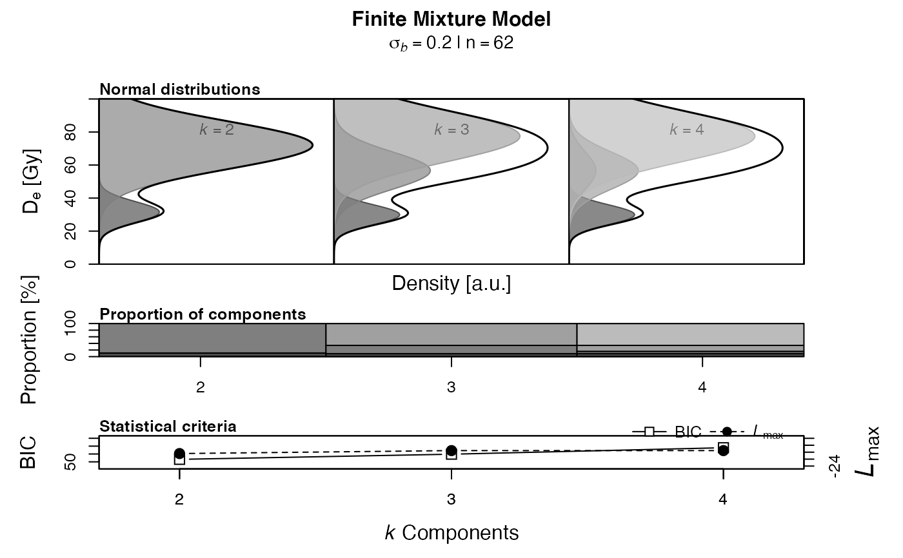

calc_FiniteMixture.RdThis function fits a k-component mixture to a De distribution with differing known standard errors. Parameters (doses and mixing proportions) are estimated by maximum likelihood assuming that the log dose estimates are from a mixture of normal distributions.
calc_FiniteMixture(data, sigmab, n.components, grain.probability = FALSE, dose.scale, pdf.weight = TRUE, pdf.sigma = "sigmab", pdf.colors = "gray", pdf.scale, plot.proportions = TRUE, plot = TRUE, ...)
| data | RLum.Results or data.frame (required):
for data.frame: two columns with De |
|---|---|
| sigmab | numeric (required): spread in De values given as a fraction (e.g. 0.2). This value represents the expected overdispersion in the data should the sample be well-bleached (Cunningham & Wallinga 2012, p. 100). |
| n.components | numeric (required):
number of components to be fitted. If a vector is provided (e.g. |
| grain.probability | logical (with default): prints the estimated probabilities of which component each grain is in |
| dose.scale | numeric:
manually set the scaling of the y-axis of the first plot with a vector
in the form of |
| pdf.weight | logical (with default):
weight the probability density functions by the components proportion (applies only
when a vector is provided for |
| pdf.sigma | character (with default):
if |
| pdf.colors | character (with default):
color coding of the components in the the plot.
Possible options are |
| pdf.scale | numeric: manually set the max density value for proper scaling of the x-axis of the first plot |
| plot.proportions | logical (with default): plot barplot showing the proportions of components |
| plot | logical (with default): plot output |
| ... | further arguments to pass. See details for their usage. |
Returns a plot (optional) and terminal output. In addition an RLum.Results object is returned containing the following elements:
data.frame summary of all relevant model results.
data.frame original input data
list used arguments
call the function call
covariance matrices of the log likelhoods
BIC score
maximum log likelihood
probabilities of a grain belonging to a component
matrix estimates of the de, de error and proportion for each component
data.frame single componente FFM estimate
This model uses the maximum likelihood and Bayesian Information Criterion (BIC) approaches.
Indications of overfitting are:
increasing BIC
repeated dose estimates
covariance matrix not positive definite
covariance matrix produces NaNs
convergence problems
Plot
If a vector (c(k.min:k.max)) is provided
for n.components a plot is generated showing the the k components
equivalent doses as normal distributions. By default pdf.weight is
set to FALSE, so that the area under each normal distribution is
always 1. If TRUE, the probability density functions are weighted by
the components proportion for each iteration of k components, so the sum of
areas of each component equals 1. While the density values are on the same
scale when no weights are used, the y-axis are individually scaled if the
probability density are weighted by the components proportion.
The standard deviation (sigma) of the normal distributions is by default
determined by a common sigmab (see pdf.sigma). For
pdf.sigma = "se" the standard error of each component is taken
instead.
The stacked barplot shows the proportion of each component (in
per cent) calculated by the FFM. The last plot shows the achieved BIC scores
and maximum log-likelihood estimates for each iteration of k.
0.4 (2018-04-19 13:18:48)
Burow, C. (2018). calc_FiniteMixture(): Apply the finite mixture model (FMM) after Galbraith (2005) to a given De distribution. Function version 0.4. In: Kreutzer, S., Burow, C., Dietze, M., Fuchs, M.C., Schmidt, C., Fischer, M., Friedrich, J. (2018). Luminescence: Comprehensive Luminescence Dating Data Analysis. R package version 0.9.0. https://CRAN.R-project.org/package=Luminescence
Galbraith, R.F. & Green, P.F., 1990. Estimating the component ages in a finite mixture. Nuclear Tracks and Radiation Measurements 17, 197-206.
Galbraith, R.F. & Laslett, G.M., 1993. Statistical models for mixed fission track ages. Nuclear Tracks Radiation Measurements 4, 459-470.
Galbraith, R.F. & Roberts, R.G., 2012. Statistical aspects of equivalent dose and error calculation and display in OSL dating: An overview and some recommendations. Quaternary Geochronology 11, 1-27.
Roberts, R.G., Galbraith, R.F., Yoshida, H., Laslett, G.M. & Olley, J.M., 2000. Distinguishing dose populations in sediment mixtures: a test of single-grain optical dating procedures using mixtures of laboratory-dosed quartz. Radiation Measurements 32, 459-465.
Galbraith, R.F., 2005. Statistics for Fission Track Analysis, Chapman & Hall/CRC, Boca Raton.
Further reading
Arnold, L.J. & Roberts, R.G., 2009. Stochastic modelling of multi-grain equivalent dose (De) distributions: Implications for OSL dating of sediment mixtures. Quaternary Geochronology 4, 204-230.
Cunningham, A.C. & Wallinga, J., 2012. Realizing the potential of fluvial archives using robust OSL chronologies. Quaternary Geochronology 12, 98-106.
Rodnight, H., Duller, G.A.T., Wintle, A.G. & Tooth, S., 2006. Assessing the reproducibility and accuracy of optical dating of fluvial deposits. Quaternary Geochronology 1, 109-120.
Rodnight, H. 2008. How many equivalent dose values are needed to obtain a reproducible distribution?. Ancient TL 26, 3-10.
## load example data data(ExampleData.DeValues, envir = environment()) ## (1) apply the finite mixture model ## NOTE: the data set is not suitable for the finite mixture model, ## which is why a very small sigmab is necessary calc_FiniteMixture(ExampleData.DeValues$CA1, sigmab = 0.2, n.components = 2, grain.probability = TRUE)#> #> [calc_FiniteMixture] #> #> --- covariance matrix of mle's --- #> #> [,1] [,2] [,3] #> [1,] 0.002144 0.001821 0.000283 #> [2,] 0.001821 0.013319 0.000877 #> [3,] 0.000283 0.000877 0.001118 #> #> ----------- meta data ------------ #> n: 62 #> sigmab: 0.2 #> number of components: 2 #> llik: -20.3938 #> BIC: 53.169 #> #> ----------- components ----------- #> #> comp1 comp2 #> #> dose (Gy) 31.5299 72.0333 #> rse(dose) 0.1154 0.0334 #> se(dose)(Gy) 3.6387 2.4082 #> #> proportion 0.1096 0.8904 #> #> -------- grain probability ------- #> #> [,1] [,2] #> [1,] 1.00 0.00 #> [2,] 1.00 0.00 #> [3,] 1.00 0.00 #> [4,] 0.99 0.01 #> [5,] 0.94 0.06 #> [6,] 0.91 0.09 #> [7,] 0.29 0.71 #> [8,] 0.13 0.87 #> [9,] 0.11 0.89 #> [10,] 0.10 0.90 #> [11,] 0.09 0.91 #> [12,] 0.06 0.94 #> [13,] 0.04 0.96 #> [14,] 0.03 0.97 #> [15,] 0.04 0.96 #> [16,] 0.02 0.98 #> [17,] 0.01 0.99 #> [18,] 0.01 0.99 #> [19,] 0.01 0.99 #> [20,] 0.00 1.00 #> [21,] 0.00 1.00 #> [22,] 0.00 1.00 #> [23,] 0.00 1.00 #> [24,] 0.00 1.00 #> [25,] 0.00 1.00 #> [26,] 0.00 1.00 #> [27,] 0.00 1.00 #> [28,] 0.00 1.00 #> [29,] 0.00 1.00 #> [30,] 0.00 1.00 #> [31,] 0.00 1.00 #> [32,] 0.00 1.00 #> [33,] 0.00 1.00 #> [34,] 0.00 1.00 #> [35,] 0.00 1.00 #> [36,] 0.00 1.00 #> [37,] 0.00 1.00 #> [38,] 0.00 1.00 #> [39,] 0.00 1.00 #> [40,] 0.00 1.00 #> [41,] 0.00 1.00 #> [42,] 0.00 1.00 #> [43,] 0.00 1.00 #> [44,] 0.00 1.00 #> [45,] 0.00 1.00 #> [46,] 0.00 1.00 #> [47,] 0.00 1.00 #> [48,] 0.00 1.00 #> [49,] 0.00 1.00 #> [50,] 0.00 1.00 #> [51,] 0.00 1.00 #> [52,] 0.00 1.00 #> [53,] 0.00 1.00 #> [54,] 0.00 1.00 #> [55,] 0.00 1.00 #> [56,] 0.00 1.00 #> [57,] 0.00 1.00 #> [58,] 0.00 1.00 #> [59,] 0.00 1.00 #> [60,] 0.00 1.00 #> [61,] 0.00 1.00 #> [62,] 0.00 1.00 #> #> -------- single component -------- #> mu: 65.2273 #> sigmab: 0.2 #> llik: -44.96 #> BIC: 94.047 #> ---------------------------------- #>## (2) repeat the finite mixture model for 2, 3 and 4 maximum number of fitted ## components and save results ## NOTE: The following example is computationally intensive. Please un-comment ## the following lines to make the example work. FMM<- calc_FiniteMixture(ExampleData.DeValues$CA1, sigmab = 0.2, n.components = c(2:4), pdf.weight = TRUE, dose.scale = c(0, 100))#> #> [calc_FiniteMixture] #> #> ----------- meta data ------------ #> n: 62 #> sigmab: 0.2 #> number of components: 2-4 #> #> -------- single component -------- #> mu: 65.2273 #> sigmab: 0.2 #> llik: -44.96 #> BIC: 94.047 #> #> ----------- k components ----------- #> 2 3 4 #> c1_dose 31.53 29.91 29.91 #> c1_se 3.64 3.97 4.32 #> c1_prop 0.11 0.09 0.09 #> c2_dose 72.03 56.65 56.65 #> c2_se 2.41 13.05 33.17 #> c2_prop 0.89 0.25 0.07 #> c3_dose <NA> 77.49 56.65 #> c3_se <NA> 6.37 21.31 #> c3_prop <NA> 0.66 0.18 #> c4_dose <NA> <NA> 77.49 #> c4_se <NA> <NA> 7.68 #> c4_prop <NA> <NA> 0.66 #> #> ----------- statistical criteria ----------- #> 2 3 4 #> BIC 53.169 59.719 67.973 #> llik -20.394 -19.542 -19.542 #> #> Lowest BIC score for k = 2 #> No significant increase in maximum log likelihood estimates. #>## show structure of the results FMM#> #> [RLum.Results-class] #> originator: calc_FiniteMixture() #> data: 10 #> .. $summary : data.frame #> .. $data : data.frame #> .. $args : list #> .. $call : call #> .. $mle : list #> .. $BIC : data.frame #> .. $llik : data.frame #> .. $grain.probability : list #> .. $components : matrix #> .. $single.comp : data.frame #> additional info elements: 0## show the results on equivalent dose, standard error and proportion of ## fitted components get_RLum(object = FMM, data.object = "components")#> 2 3 4 #> c1_dose 31.53 29.91 29.91 #> c1_se 3.64 3.97 4.32 #> c1_prop 0.11 0.09 0.09 #> c2_dose 72.03 56.65 56.65 #> c2_se 2.41 13.05 33.17 #> c2_prop 0.89 0.25 0.07 #> c3_dose NA 77.49 56.65 #> c3_se NA 6.37 21.31 #> c3_prop NA 0.66 0.18 #> c4_dose NA NA 77.49 #> c4_se NA NA 7.68 #> c4_prop NA NA 0.66